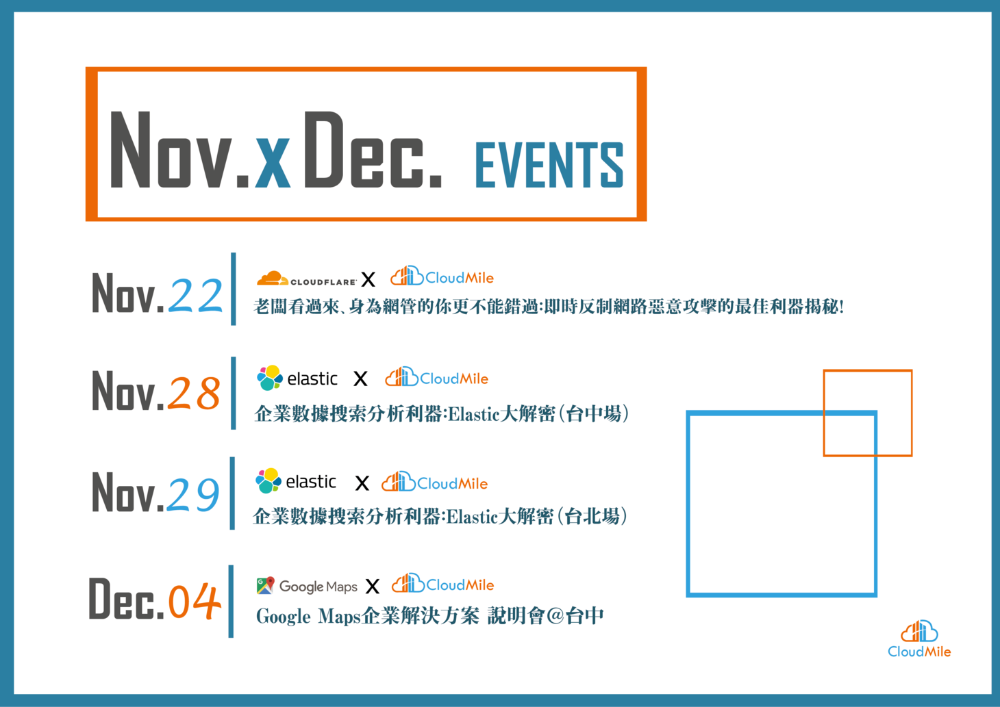

Hello World
CodeTengu Weekly 碼天狗週刊
如果命運的齒輪沒有出差錯，CodeTengu Weekly 會在 UTC+8 時區的每個禮拜一 AM 10:00 出刊。每週會由三位 curator 負責當期的內容，每個 curator 有各自擅長的領域，如果你在這一期沒有看到感興趣的東西，可能下一期就有了。當然你也可以瀏覽一下前幾期的內容。或是關注我們的 Facebook、Twitter、GitHub。有任何建議也歡迎來 Gitter 聊聊。
目前的 curator 陣容：
- @vinta - I failed the Turing Test - 科幻迷，最近在讀 Blindsight
- @saiday - Imnotyourson - 有什麼意見進來 Runtime 講啊
- @tzangms - Oceanic / 人生海海 - 最近真的都在玩薩爾達
- @fukuball - ImFukuball - 有新工作了，但歡迎直接挖角
- @mingderwang - Ethereum enthusiast，最近在研究區塊鏈遊戲
- @kako0507 - 熱愛嘗試新事物的前端工程師
- @chiahsien - 我們公司在徵人
- @uranusjr - Smaller Things - 明年 PyCon Taiwan 在九月喔
- @yhsiang - AMIS / MAICOIN 徵才中，歡迎聯繫！
- @johnlinvc - 挑戰自動化家中電器
- @wancw
- @allanlei
- @theJian
- @lucienlee - 🦌
- @hwchiu
 @vinta
@vinta
KubeCon + CloudNativeCon China 2018 - YouTube
上禮拜去了上海參加今年的 KubeCon + CloudNativeCon China 2018，沒想到這次這麼快就有錄影可以看了，沒有去現場的朋友可以看看影片過過癮。
題外話，有些讀者可能有注意到，因為命運的齒輪出了差錯，近期咱們 CodeTengu Weekly 出刊的頻率實在有點不穩定，週刊都不週刊了，在這裡得跟讀者說聲抱歉，怠慢了。
不過話說回來，這個週刊從 2015/08/03 的第一期到現在，也經營了三年多了啊，但是就像上班久了，難免會遇到工作倦怠嘛（攤手），而且每位 curator 其實也都各有全職工作和家庭要顧，仔細想想，這個完全無酬、全靠興趣在支撐的 weekly 能夠存活這麼久真的是挺了不起的啊，在這裡真的要跟各位 curator 說聲由衷的感謝。另外，如果大家不嫌麻煩的話，也想請各位讀者可以在 Twitter 或 Gitter 上跟你喜歡的 curator 說聲辛苦啦或是任何的反饋都行，畢竟除了我三不五時偷懶之外，其他的 curator 可都是非常用心地準備每一期的分享啊。
最後，為了讓這個 weekly 能夠盡量持續下去，我們目前的運作方式勢必是得做些調整了，雖然我也還沒想清楚確切的方向，不過最近應該會在 CodeTengu 的 GitHub 上跟大家討論一下。所以呢，在有定論之前，可能也還是會像最近這樣不定期休刊，還望各位讀者多多包涵了。
Container Native Load Balancing on GKE
Google Cloud 前陣子推出了 Container Native Load Balancing，可以直接 target 到實際的 containers，每個 connection 直接從 load balancer 到 backend pods，不再有 iptables magic 了。
這個影片很清楚地說明了 Kubernetes 原本的 networking 機制，然後又介紹了新的 Load Balancing 是如何運作的；影片的後半段也講到了 GKE 上的 Custom Resource BackendConfig，基本上就是讓你只需要在 Service 加上幾個 annotation 就可以配置許多 L7 的網路設定，例如 CDN、Security Policy，帥氣。
我們團隊在公司的一個新產品上正好試用了一下這個新功能，嗯，只能說想嚐鮮的人其實可以等這個功能成熟一點再用到 production。
延伸閱讀：
MongoDB Change Streams
前陣子學到一個新詞 Change Data Capture (CDC)，基本上就是資料庫提供了一個機制，讓你能夠即時監聽所有數據的 insert、update、delete 等修改。當然你也可以透過解析資料庫底層的 replication logs（例如 MySQL 的 binlog）來做到同樣的事，差別在於某些資料庫直接提供了一套高階而且安全的 API，例如本文提到的 MongoDB 的 Change Streams，然後你就可以用這些 data change event 去更新 cache、search index 或是另一個資料庫，炫炮一點也可以丟進 Kafka，變成一個更通用的 stream processing 系統，峰峰相連到天邊。
不過類似的功能 Microsoft SQL Server 在 10 年前就已經提供了啊，太陽底下果真沒有新鮮事。
延伸閱讀：
mitmproxy: proxy any network traffic through your local machine
mitmproxy 和 Charles 一樣，都是用來攔截 network traffic 的工具，硬派一點的還有 tcpdump 和 wireshark。不過 mitmproxy 最棒的是它自帶一套完善的 Python API（畢竟 mitmproxy 就是用 Python 寫的嘛），這樣一來可以玩的東西可就多了呢～
這篇文章簡單地介紹了 mitmproxy 的幾個用法，例如把 remote server 的 requests 導到你的 local server 和怎麼對付 certificate pinning（當然前提是你有當初綁定的那個 certificate）。
延伸閱讀：
caolan/async - Async utilities for node and the browser
目前公司裡的不少 Node.js 專案都用到了 async.js 這個 library，裡頭有很多既好用又魔性的 utility functions，例如 autoInject 和 cargo，大家感受一下。
延伸閱讀：
 @saiday
@saiday
The Reality of Migrating to AndroidX
Android support library 已經被整併到 Jetpack aka AndroidX 了，往後也只會更新 Jetpack 裡的 support library，所以，我們必須轉換。
對一個行之有年的專案來說這個轉換很辛苦，有許多的 support library 依賴要處理。
作者使用 Android Studio 帶的 Migrate to AndroidX 會有非預期的更動，所以他自己提供了一個最簡單版本的 script 來改舊的 support library 的 import path，這個實用！
因為這個週刊（？）不是只給 Android developer 看的，所以跟大家分享一下，在這種依賴轉移的案例上 Google 在 Gradle (build tool) 上面加了一個 flag android.enableJetifier，當值是 true 的時候會在 build time 的時候直接改第三方套件的 binary 採用新的 library，有創意！
The power of key paths in Swift
我本來對 Swift 的 KeyPath 想像就是拿來做簡單的 KVC，但這篇文利用 KeyPath 語言特性做了 function composition。
大概像是這樣：
loader.load(setter(for: self, keyPath: \.items))
對呢，把 KeyPath 當成 function argument 就可以設計出有動態特性的的 APIs。現在的靜態語言真是不得了。
 @uranusjr
@uranusjr
Ownership Explained with Python
用 Python (主要是 iterator 行為) 解釋 Rust 的 ownership 概念，以及它為什麼好用。
Python 的 iterator 行為一直很困擾我。它在概念上很棒，但是如果你的介面需要接受任何 iterables，怎麼設計和實作防呆就是個大問題。如果你接受所有可以 iterate 的類型，就得注意實作裡不能跑它複數次，或者記得先 copy，以防使用者傳 iterator 進來。但是如果你永遠 copy，又代表你會浪費不必要的資源和時間。如果你堅決只接受 collection types，實作就會簡單一些，但是一來你必須在文件寫明，二來 API 在很多時候會十分彆扭，而且最重要的是，你還是沒辦法保證使用者不會犯錯。
Rust 的 ownership system 代表你可以放心的使用任何一種設計，讓編譯器負責剩下的事情。如果你接受 iterators，它會發現你有沒有不小心重複 iterate；如果你接 Vec 之類的類型，它也會阻止使用者亂搞。我還在思考 Python（和其他動態語言）有什麼好方法可以借鑑這個特性，希望能想出個合理的解答。如果你有什麼好想法，也麻煩跟我說一聲。
工商服務

企業數據搜索分析利器：Elastic 大解密（台中場）
常常 on-call 被公司叫回去救火？ 還是老闆說了想要發展大數據轉頭就把擔子丟給你？或是工作太久想要吸收新知？以上疑難雜症，就交給 CloudMile 萬里雲的講座吧！
我們即將於 11 月下旬陸續舉辦不同講座，希望能讓身為攻城師的你少一點為問題煩心，多一些經歷可以專注在開發：）
講座連發：